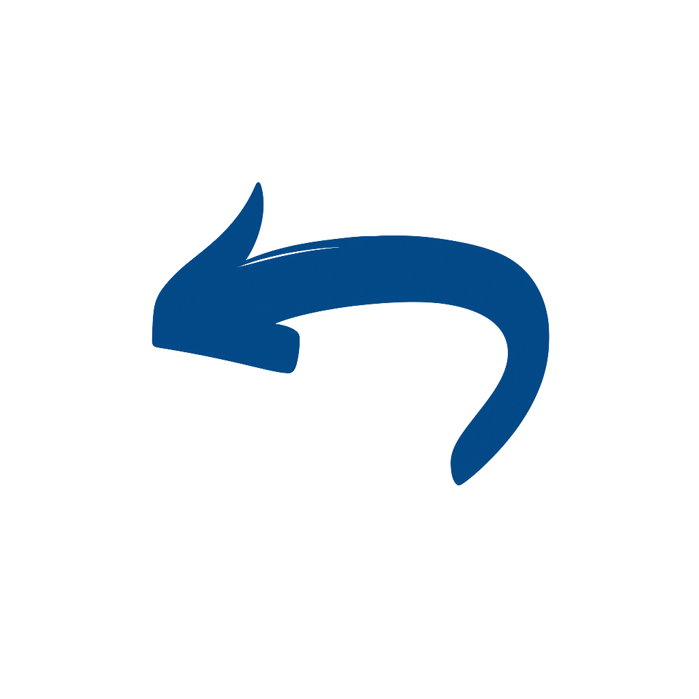

Cerrar sesión
Reportes Administración

Stock Softland
Reportes:
1. Stock Softland
Stock Río Grande
Reportes:
1. Stock Río Grande
2. Stock Equipos Mes
 Cerrar sesión
Cerrar sesión
Cerrar sesión
Cerrar sesión